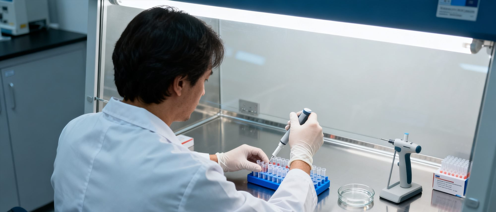

血液研究宣布阶段性成果
研究团队称从年轻女性血液中提取出特定成分，或对延缓衰老有积极作用

研究团队在成果发布会上展示的部分实验数据。
图片由研究机构提供。
一项由私人机构资助的血液研究项目于上周宣布阶段性成果。 研究团队表示，从年轻女性血液中提取的特定成分， 在实验室条件下显示出延缓细胞衰老的潜力。
研究内容
该项目始于2024年，由一家私人研究机构资助。 项目负责人陈博士表示， 团队长期关注血液成分与组织修复之间的关系。
在最新的实验结果中， 研究人员从年轻女性的血液样本中 提取出了一种尚未命名的细胞因子。 初步数据显示， 该成分在体外实验中能够促进受损组织的修复， 并减缓某些衰老标志物的累积。
陈博士的回应
陈博士在成果发布会上表示：
但我们的数据表明，年轻血液中的某些成分， 确实在细胞层面起到了重要作用。”
陈博士强调，目前的研究仍处于实验室阶段， 距离临床应用还有很长的距离。
对于血液样本的来源，陈博士仅表示 “均来自自愿参与的受试者”， 未透露具体招募渠道。
学界反应
香港大学医学院一名教授在接受本刊采访时表示， 该研究的方向并非全新领域， 但针对特定年龄段女性血液成分的系统研究相对少见。
该教授提醒：
研究团队需要回答的问题还有很多。”
本文基于研究机构公开资料及发布会内容整理。
如有进一步线索，请联系本刊调查组。